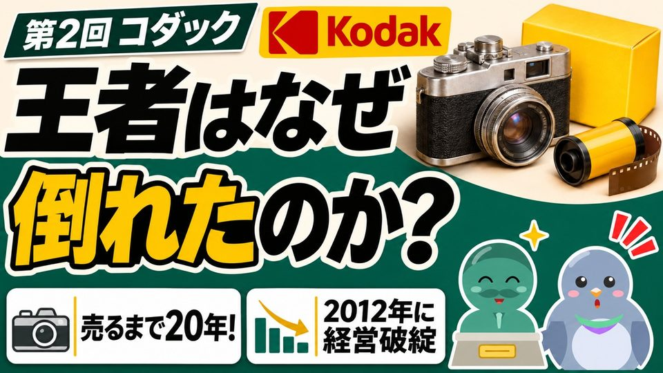
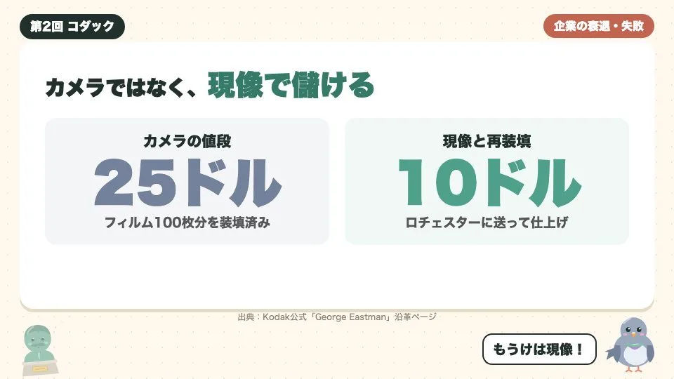
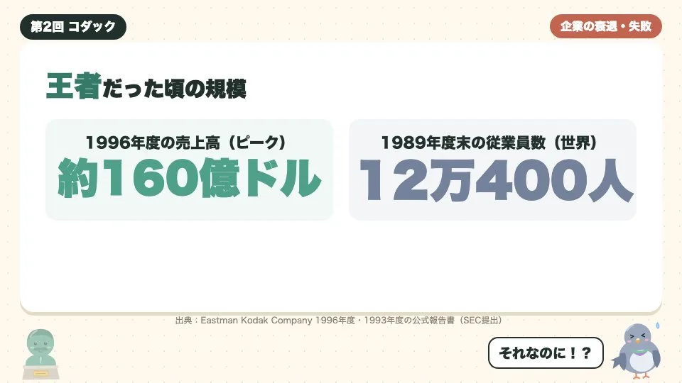
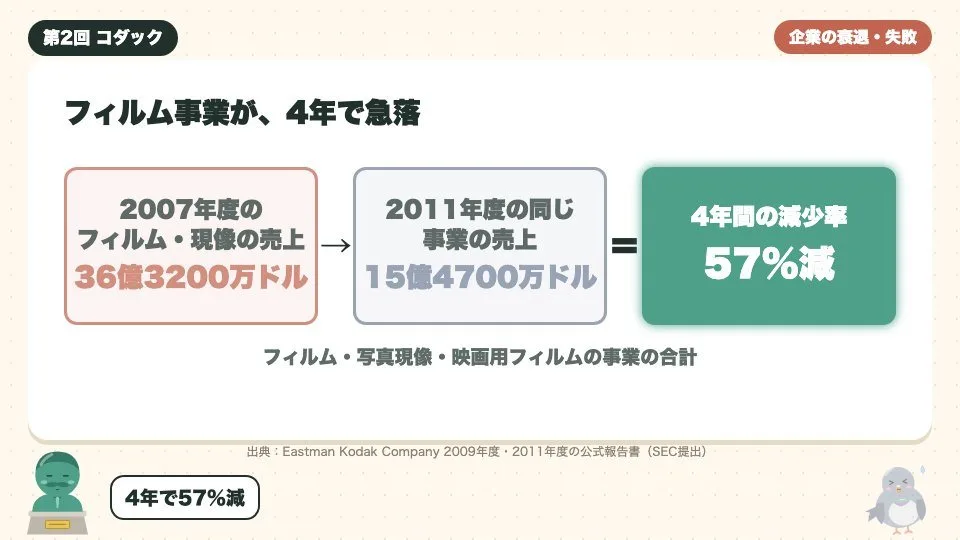
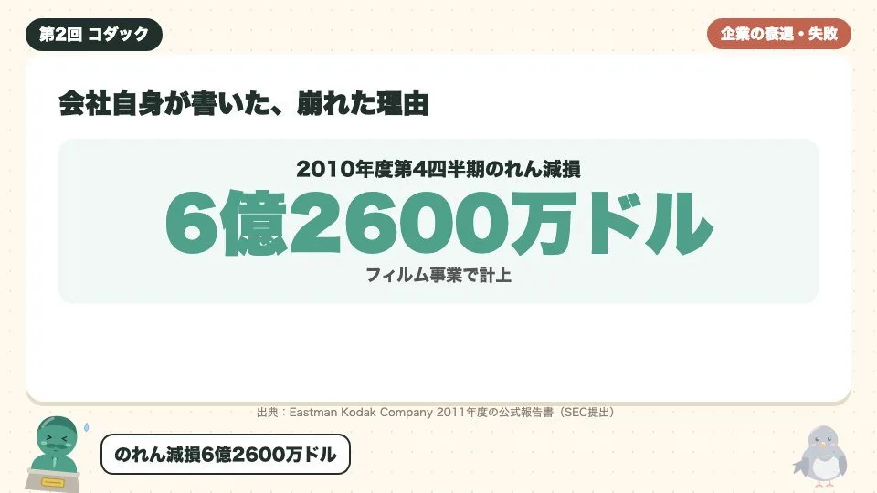
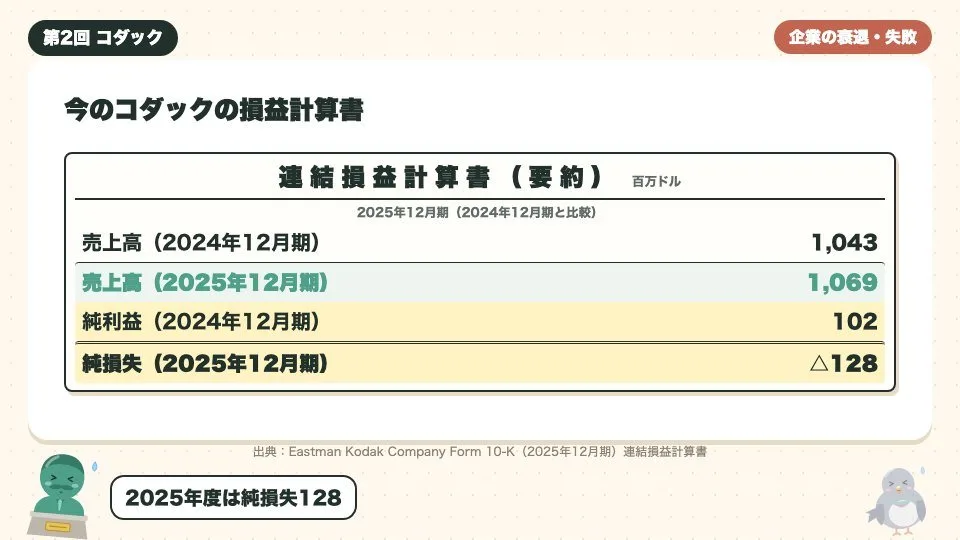
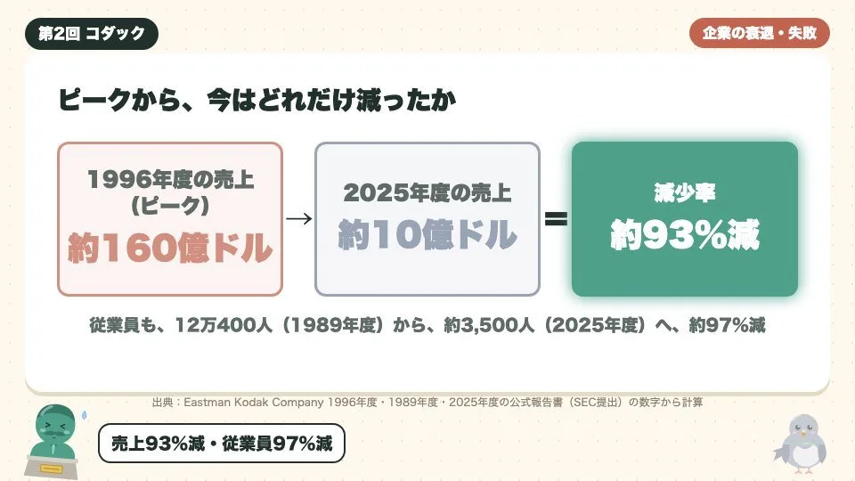
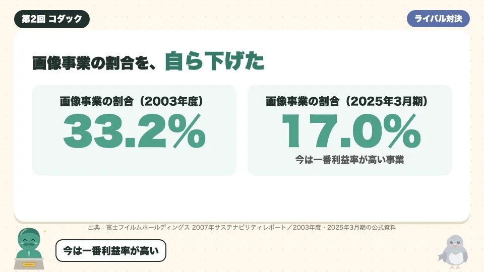
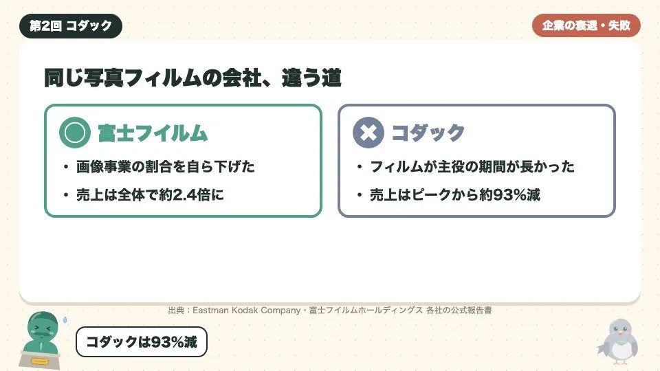

コダックが倒産した理由は、1975年に世界初のデジタルカメラを自社で発明しながら、本格的に売り出すまで20年もかけたことです。その間もフィルムと現像の事業は主力であり続け、デジタルへの置き換えが一気に進んだ2007年度から2011年度のわずか4年で、その事業の売上が57%減りました。2012年1月19日、コダックはニューヨークの裁判所に会社更生の手続きを申請し、経営破綻しました。この記事では、公式の年次報告書(Form 10-K)などの数字だけで、倒産に至った理由と今の姿を解体します。

▶ この記事の内容を動画で見る（ビジネス解体新書）01儲けの正体は、カメラではなく現像だった
コダックは1880年、米国ニューヨーク州ロチェスターでジョージ・イーストマンが乾板(写真用のガラス板)の製造会社として創業しました。コストコはなぜ安いのに儲かるのかと同じく、会社が自分で出している公式の記録だけで「なぜ」を解体していきます。
1888年に発売した最初のコダックカメラは、価格25ドルでフィルムを100枚分装填済み。撮り終えたカメラをそのままロチェスターに送ると、現像と新しいフィルムの再装填をまとめて10ドルで行いました。もうけの正体はカメラ本体ではなく、現像とフィルムの買い替えでした。

この「カメラを安く売り、現像とフィルムで稼ぐ」仕組みで、コダックは写真業界の王者になります。1996年度の売上高は約160億ドルでピークを迎え、1989年度末には世界で12万400人がはたらいていました。

02発明から20年、売り出さなかったデジタルカメラ
コダックは1975年、自社の技術者が世界初のデジタルカメラを発明しました。大きさはトースターほど、解像度はわずか1万画素の白黒という試作機でした。しかし、これを実際に消費者向けに量産・発売したのは1995年の「KODAK DC40」。発明から実に20年がたっていました。
発売後もフィルムが主役の状態は長く続きます。2001年度の消費者用フィルムの売上は前年度比7%減、2003年度の写真現像サービスの売上も15%減にとどまり、下り坂はゆるやかでした。
03フィルム事業が4年で57%減り、2012年に経営破綻
ゆるやかな下り坂が一変したのは2007年度以降です。フィルム・写真現像・映画用フィルムをまとめた事業の売上は、2007年度の36億3200万ドルから2011年度には15億4700万ドルまで落ち込みました。4年間の減少率は57%。中でも2009年度は、フィルムの売上が前年度比38%減、写真現像サービスも24%減と、1年での崩れ方が特に激しい年でした。

コダック自身も、公式の報告書にその理由をはっきり記しています。2010年度第4四半期、フィルム事業の将来の価値が見込みより下がったとみなし、のれん減損として6億2600万ドルを計上。理由として挙げたのは「デジタルへの置き換え」でした。

破綻の前年、2011年度の売上は60億2200万ドルまで縮小し、従業員も1万7,100人まで減っていました。2012年1月19日、コダックはニューヨーク州南部地区の連邦破産裁判所に会社更生の手続きを申請します。当時の社長は申請の日に「2003年以降、工場13カ所と現像ラボ130カ所を閉鎖し、従業員を4万7000人減らした」と語りました。
注意会社更生(Chapter 11)は、借金を減らして事業を立て直すための法的な手続きです。会社そのものが消えてなくなったわけではありません。
最後に残った大きな資産はデジタル画像の特許でした。2003年以降のライセンス収入は30億ドルを超え、2012年12月にはこの特許ポートフォリオを約5億2500万ドルで売却。2013年9月3日、コダックは会社更生の手続きを終え、小さな会社として再出発しました。
04今のコダックの姿、ピークから93%減
再出発した今のコダックは、写真の会社ではありません。2024年度の売上は、印刷事業が71%を占め、残りは先端材料・化学品の事業と、コダックの名前を貸すブランドライセンスの事業です。
実際の損益計算書で確かめると、2024年12月期の売上は1,043百万ドル、2025年12月期は1,069百万ドル。純損益は2024年12月期が102百万ドルの純利益だったのに対し、2025年12月期は128百万ドルの純損失でした。

ピークと今を比べると、売上高は約93%減、従業員は約97%減です。売上は1996年度の約160億ドルから2025年度には約10億ドルへ。従業員も1989年度末の12万400人から約3,500人へ減りました。

05富士フイルムとの違い、画像事業を自ら縮めた会社
同じ写真フィルムの会社でも、違う道をたどったのが富士フイルムです。2004年に中期経営計画を立て、画像(フィルム)事業の割合を自ら下げていきました。売上比率は2003年度の33.2%から2025年3月期には17.0%まで低下。ただしすんなりとは進まず、2006年度は割合21.7%で、この年の画像事業は426億円の営業損失でした。

画像事業を縮めても、会社全体は大きくなりました。総売上は2000年度の1兆3488億円から2025年3月期には3兆1958億円へ、約2.4倍に拡大。2025年3月期はビジネスイノベーションが37.5%、ヘルスケアが32.0%を占め、画像事業は17.0%まで小さくなりました。

ポイント富士フイルムとコダックの売上は通貨が違います(円とドル)。この記事では為替換算をせず、それぞれ自国通貨のままの時系列で比べています。
06よくある質問
コダックが倒産した理由は何ですか？
フィルムと写真現像の事業が、デジタルへの置き換えで2007年度から2011年度の4年間に57%減ったことです。コダック自身も公式の報告書で、2010年度ののれん減損の理由として「デジタルへの置き換え」を挙げています。発明から20年、デジタルカメラを売り出さなかったことも背景にあります。
コダックが会社更生を申請したのはいつですか？
2012年1月19日です。ニューヨーク州南部地区の連邦破産裁判所に申請し、2013年9月3日に手続きを終えました。
今のコダックは何の会社ですか？
2024年度の売上は印刷事業が71%を占め、残りは先端材料・化学品の事業と、コダックの名前を貸すブランドライセンスの事業です。写真を中心とした会社ではなくなっています。
富士フイルムはなぜコダックのように倒産しなかったのですか？
2004年の中期経営計画で、画像(フィルム)事業の売上比率を自ら33.2%から17.0%まで下げ、ほかの事業に資源を移しました。その結果、総売上は約2.4倍に拡大しています。
07まとめ
結論コダックが倒産した理由は、世界初のデジタルカメラを発明しながら20年売り出さず、その間に主力だったフィルム・現像事業がわずか4年で57%減ったことです。
- 1975年に世界初のデジタルカメラを発明したが、量産型の発売は1995年と20年後だった
- フィルム・現像事業は2007年度から2011年度で57%減。2012年1月19日に会社更生を申請した
- 今のコダックは売上の71%が印刷事業。ピークの1996年度から売上は約93%減、従業員は約97%減
- 同じ写真フィルムの会社でも、富士フイルムは画像事業を自ら縮め、会社全体を約2.4倍に伸ばした
コダックの歴史は、発明したかどうかより、いつ・どう売り出すかが会社の存続を左右することを示しています。